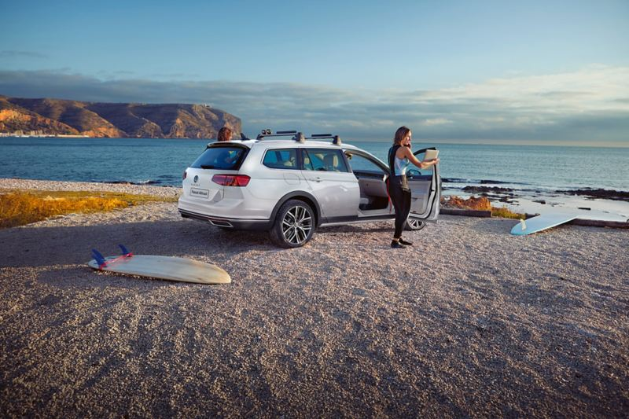
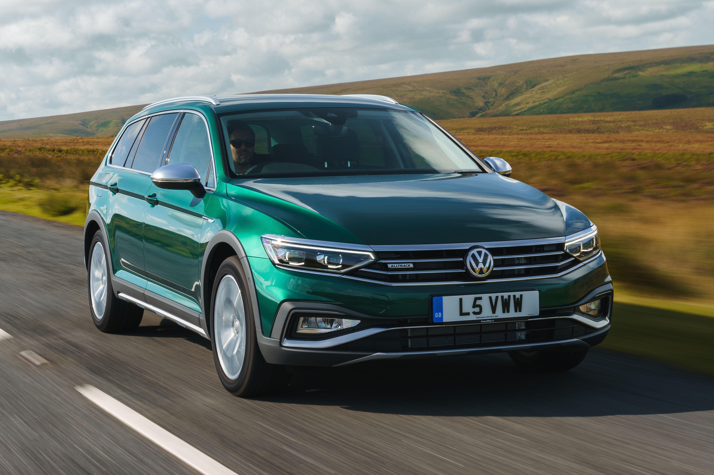

Passat Alltrack
Passat Alltrack. Özgürlüğüne düşkün.
Geniş caddeler ya da dar sokaklar... Yüksek süratli otobanlar ya da keskin virajlar... Dağlar, tepeler, yolun bittiği yer. Passat Alltrack, şartlar ne olursa olsun ilerlemek için tasarlandı. 27,5 mm yükseltilmiş şasisi, özel Off-Road Sürüş Modu ve 4MOTION® dört tekerlekten çekiş sistemi ile bozuk yollar ve hafif arazi şartları, onun doğal ortamları. Kendini kanıtlamış Passat konforu, 200 PS güce sahip 2.0 TDI motorun durdurulamaz çekiş gücü, 2,2 tonluk azami çekme kapasitesi ve 639 litrelik devasa yükleme hacmiyle Passat Alltrack, sizi her koşulda destekleyecek gerçek bir uzun yol otomobili.
Tasarım

Şık ve İşlevsel.
Passat Alltrack, ön radyatör ızgarasında, yan cam çerçevelerinde, ön ve arka tampon detaylarında ve yan aynalard a bolca kullanılan krom malzemelerle üst düzey bir şıklığa sahiptir. Bununla birlikte genlerinde taşıdığı Off-Road sürüş özelliklerini yansıtan kompozit koruma parçaları gövdeyle eşsiz bir kontrast oluşturur. Bu koruma parçaları Off-Road sürüşte bu alanlara çarpabilecek cisimlere karşı ek bir koruma sağlarken, Passat Alltrack'i trafikte seyreden diğer araçlardan ayrıştırır. Farklı ve sofistike zevklere sahip bir sürücü ve her görevi yerine getirebilecek özelliklerle donatılmış otomobili. (S)
KONFOR

Size özel bir seyir ekranı.
Sürüş sırasında sadece hız ve devir sayaçlarını mı görmek istiyorsunuz? Yoksa detaylı performans verilerini ya da navigasyon haritasını mı..? Peki ya dinlediğiniz müziğin adını..? Tüm bunların hepsine ve daha fazlasına ne dersiniz? Passat Alltrack'in çok fonksiyonlu direksiyonu üzerindeki tuşlar sayesinde bu seçimi yapmak artık elinizde. Geleneksel gösterge tablolarının sınırlı kişiselleştirme ve bilgilendirme yeteneklerinin ötesine geçen, yüksek çözünürlüklü TFT LCD ekranda istediğiniz bilgi profilini rahatlıkla görebilirsiniz. (S) -26 cm (10,25") renkli TFT ekran. -Çoklu yapılandırma olanağı.
Teknoloji

Durdurulamaz bir ilerleme.
Endişelenmenize gerek yok! Islak, buzlu ve engebeli zeminlerde de çekişiniz yerinde! 4MOTION®, sahip olduğu akıllı Haldex® kavrama sistemi sayesinde motor gücünün tüm tekerleklere gerektiği kadar dağıtılmasını sağlar. Bu sayede Passat Alltrack 4MOTION®, her durumda çekiş gücünü kaybetmeden etkili bir şekilde hızlanır, tekerleklerin patinaja düşmesi ya da kilitlenmesi önlenir. 4MOTION® dört tekerlekten çekiş sisteminin yanı sıra özel olarak tasarlanan “Off-Road” sürüş programı ile de donatılan Passat Alltrack, tüm zeminler için rahat ve güvenli bir yolculuk sunar. (S)
Güvenlik

Güvenli takip mesafesi, uygun hız limitleri.
Adaptif Hız Sabitleyici "ACC", önceden ayarladığınız hız limitini geçmenizi önler1 ve önünüzde seyreden araçla aranızdaki mesafeyi korumanızı sağlar2. Böylece dur-kalk trafikte ilerlerken Passat Alltrack, tamamen otomatik olarak fren yapıp öndeki aracın arkasında durur ve bu araç ilerlemeye başladığında yine otomatik olarak yeniden hareket etmeye başlar. Adaptif Hız Sabitleyici "ACC" ile birlikte gelen Şehir İçi Acil Frenleme “Front Assist” ise radar sensörleri yardımıyla kritik mesafe durumlarını algılar ve Passat Alltrack'in durma mesafesini kısaltmaya yardımcı olur². (S) 1 Maksimum 210 km/s hıza kadar. 2 Hız limitleri dahilinde.
Volkswagen Hakkında Modeller Ve Fiyatlar İletişim Sosyal Medya
İkinci El Araçlar Tüm Modeller Yetkili Satıcı Facebook
Ticari Araçlar SUV Modeller Online Servis Instagram
Satış Sonrası Hizmetler Araç Fiyatları İletişim Ve Destek Twitter
Kampanyalar Aksesuarlar Bilgi Formu Youtube
|